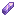
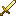

Story bossVerhaalbaas
A story boss: click to showEen verhaalbaas: klik om te kijken

Mechanics
Grijze cirkels = ontvadsings-poeder: eruit! Ontsnapt hij met een ballon, schiet of mep die ballon kapot.
Named lootBenoemde buit
 Pluisarmband
Pluisarmband Rozenarmbandje
Rozenarmbandje Klodderbroek
Klodderbroek Steelbroek
Steelbroek Zwambroek
Zwambroek Bubbelvest
Bubbelvest Klodderhesje
Klodderhesje Knaagvachtje
Knaagvachtje Knuffelharnas
Knuffelharnas Sporenmantel
Sporenmantel Knuffelcapeje
Knuffelcapeje Sporencape
Sporencape Kloddergrijpers
Kloddergrijpers Pluiswantjes
Pluiswantjes De Neppe Snor van de Spion 3% guhddelijk
De Neppe Snor van de Spion 3% guhddelijk Klodderkapje
Klodderkapje Kristalhelmpje
Kristalhelmpje Pluishelm
Pluishelm Slijmmutsje
Slijmmutsje Zwamhoed
Zwamhoed Knuffelketting
Knuffelketting
Pluisoorbel Roze Ring
Roze Ring Klodderstuiters
Klodderstuiters Mossloffen
Mossloffen Plakpantoffels
Plakpantoffels Rookbommetjeslaarzen 15% legendarisch
Rookbommetjeslaarzen 15% legendarisch Druppelboog
Druppelboog Eikelkatapult
Eikelkatapult Klodderkling
Klodderkling- Knuffelknots

Kussenzwaard Pluisboog
Pluisboog Pluishamer
Pluishamer Rozenstaf
Rozenstaf Slijmboek
Slijmboek Snoepkruisboog
Snoepkruisboog Vlammenstaf
Vlammenstaf Zwamstokje
Zwamstokje
All dropsAlle buit
Every helper (at least 5% of the work) gets their own chest; the chances below are per player.
Elke helper (minstens 5% van het werk) krijgt een eigen kist; de kansen hieronder zijn per speler.
The boss chestDe baaskist
2 rolls, rarity rolled with luck 2.8.2 keer rollen, de zeldzaamheid met geluk 2.8. CoinsMunten: 250-600 bronzebrons.
| Item | Chance per rollKans per rol |
|---|---|
| Kussenzwaard | 3.0% |
| Knuffelknots | 3.0% |
| Pluishamer | 3.0% |
| Klodderkling | 3.0% |
| Pluisboog | 3.0% |
| Druppelboog | 3.0% |
| Snoepkruisboog | 3.0% |
| Eikelkatapult | 3.0% |
| Rozenstaf | 3.0% |
| Vlammenstaf | 3.0% |
| Zwamstokje | 3.0% |
| Slijmboek | 3.0% |
| Pluishelm | 3.0% |
| Knuffelharnas | 3.0% |
| Slijmmutsje | 3.0% |
| Bubbelvest | 3.0% |
| Plakpantoffels | 3.0% |
| Steelbroek | 3.0% |
| Knaagvachtje | 3.0% |
| Kristalhelmpje | 3.0% |
| Klodderkapje | 3.0% |
| Klodderhesje | 3.0% |
| Klodderbroek | 3.0% |
| Klodderstuiters | 3.0% |
| Zwamhoed | 3.0% |
| Sporenmantel | 3.0% |
| Zwambroek | 3.0% |
| Mossloffen | 3.0% |
| Kloddergrijpers | 3.0% |
| Sporencape | 3.0% |
| Roze Ring | 1.5% |
| Knuffelketting | 1.5% |
| Pluisoorbel | 1.5% |
| Pluiswantjes | 1.5% |
| Knuffelcapeje | 1.5% |
| Pluisarmband | 1.5% |
| Rozenarmbandje | 1.5% |
AlsoOok
| KindSoort | WhatWat | ChanceKans |
|---|---|---|
| TrophyTrofee | Trofee: De Mika-spion | sure, on your first win (decoration for home)zeker, bij je eerste overwinning (deco voor thuis) |
Hidden by your spoiler setting.Verborgen door je spoilerinstelling.